One, three, or five references.
GPT Image 1.5 low compared across the same four fonts and symbols. Each column uses the same prompt: one full alphabet sheet, or one, three, or five separate images of individual letters. Click an output to view it at full size.
One attempt per setup and case; no cherry-picking. The sheet results are reused from the earlier model comparison. Individual inputs are H, then H/O/S, then H/O/S/A/R. Images are 512px outputs before tracing or sizing; white space varies. The original target character was withheld.
| Font lettering | Full alphabet sheet | 1 glyph image · H | 3 glyph images · H O S | 5 glyph images · H O S A R | Original glyph |
|---|---|---|---|---|---|
| Ostrich SansThin, condensed · & ART DESIGN ABCDEFG 012345 | 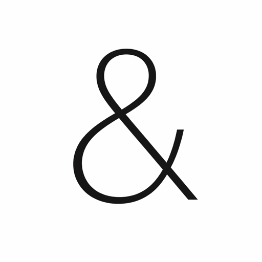 | 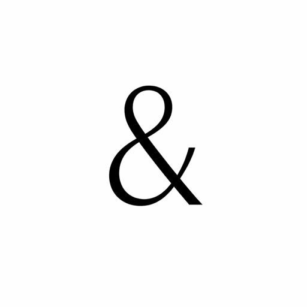 | 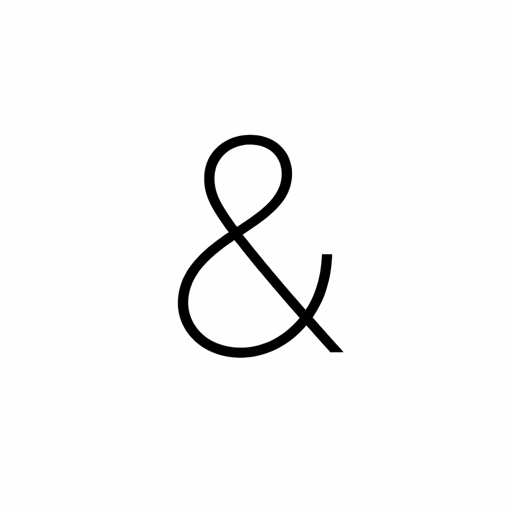 | 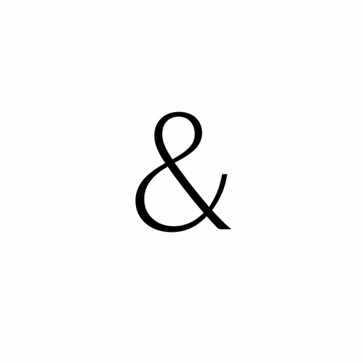 | & |
| Kool BeansBold, decorative · @ HELLO WORLD ABCDEFG 012345 | @ This font’s original @ spells out “at”. | ||||
| MonofontoBold, monospaced · % SAVE TODAY ABCDEFG 012345 | 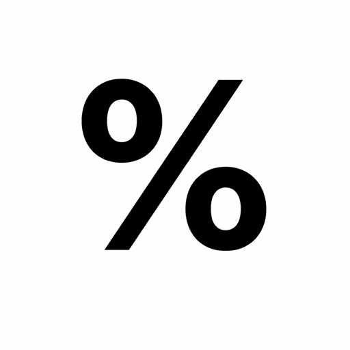 | 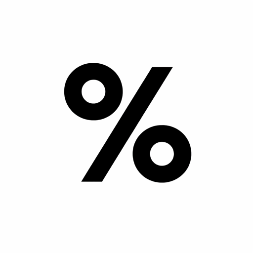 | 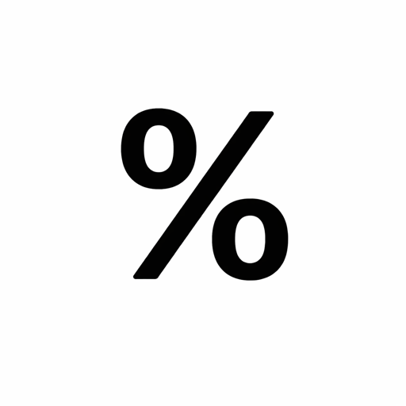 | % | |
| Perfect SignatureExpressive script · $ SALE NOW ABCDEFG 012345 | 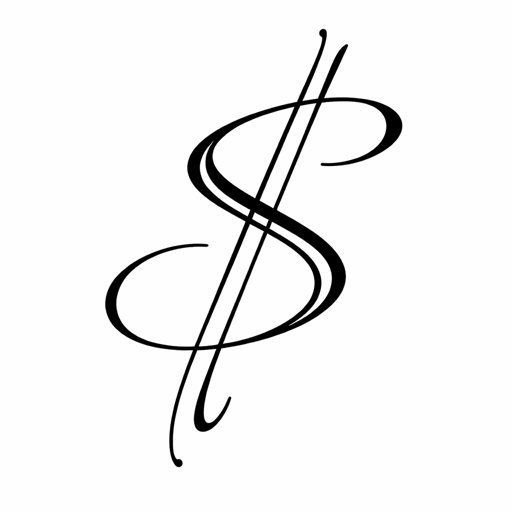 | 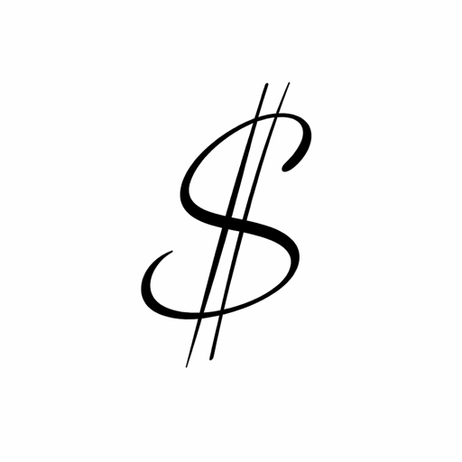 | 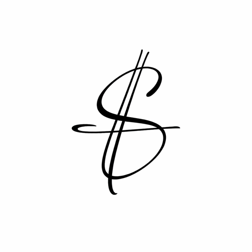 | 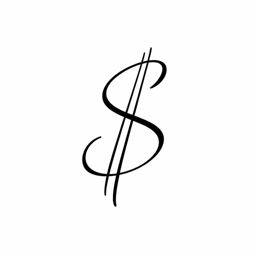 | $ |